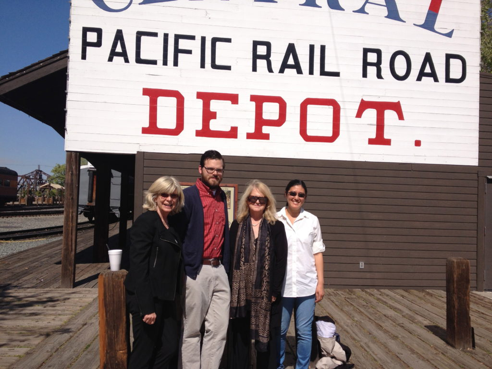
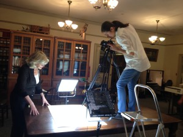
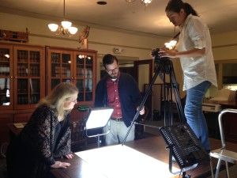
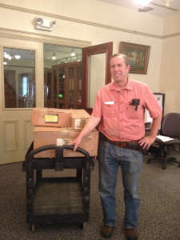
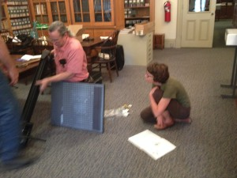
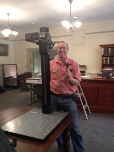
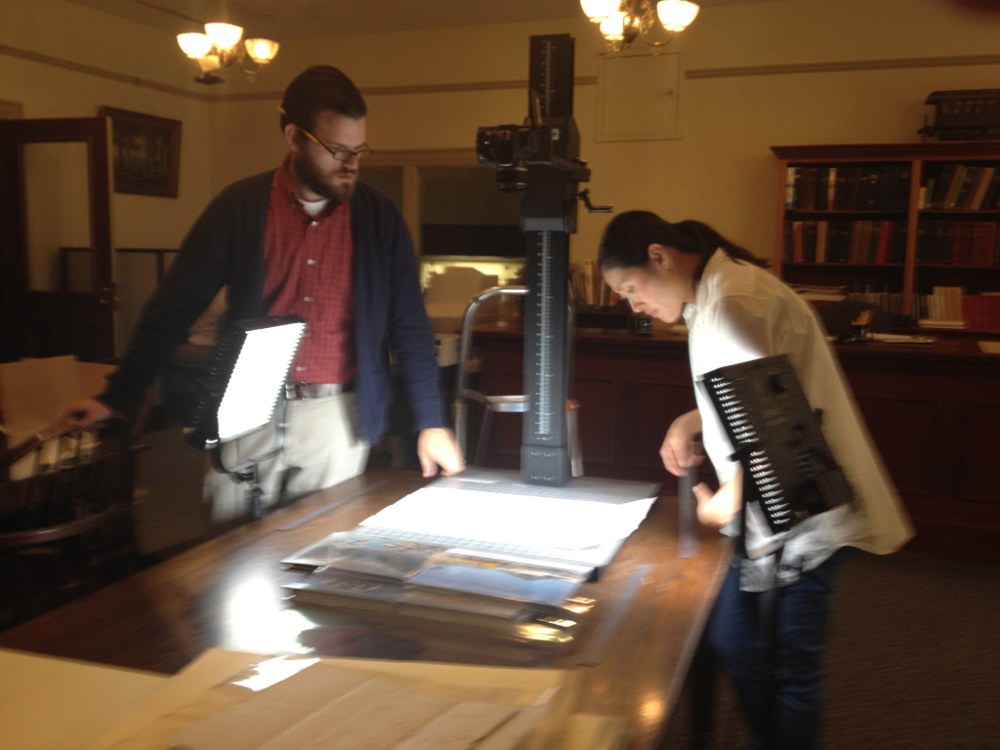

In late March 2014, four Stanford members of the Chinese Railroad Workers in North America Project—Shelley Fisher Fishkin, Jason Heppler, Teri Hessel and Denise Khor—traveled to the California State Railroad Museum in Sacramento to digitize every extant Central Pacific Railroad Payroll Sheet that contained the names of Chinese workers. All of these payroll records will eventually be accessible to the public in the Project’s Digital Archive.

Teri Hessel, Jason Heppler, Shelley Fisher Fishkin, and Denise Khor at the Central Pacific Railroad Depot in Sacramento, near the California State Railroad Museum.
We are enormously grateful to Cara Randall, Librarian of the California State Railroad Museum and her staff for making our visit—and our access to these documents—possible. We were excited about the chance to collaborate with the California State Railroad Museum on this important venture.
Armed with a Canon EOS Rebel T3i camera, extra batteries, a tripod and a set of halogen camera lights, we were ready for action when the Museum opened on the morning of March 24th—or so we thought.
The payroll records turned out to be so large that to capture one sheet in its entirety, the tripod had to be mounted on the table—where it cast shadows on the document that made the already-faint writing nearly illegible.


Shelley Fisher Fishkin, Jason Heppler, Denise Khor and Teri Hessel trying to capture a payroll record sheet with the equipment that they brought.
What we needed, Cara Randall realized, was something none of us had ever used before: a copy stand, a device designed precisely for the kind of challenge that faced us. But the Library didn’t have one. We began to look into renting one locally—to no avail.
At that moment, Kyle Wyatt, Curator of History and Technology at the Railroad Museum happened by and saw our long faces. He remembered that in the 1990s he had bought a copy stand. It was still in his garage. In boxes – never unpacked. In an act of wonderful generosity, Kyle drove home, loaded the pieces of the copy stand into his car, and drove back to the museum with it, where he painstakingly put it together. (He took the opportunity to donate the copy stand to the California State Railroad Museum Library, so the institution will have one available in the future—for its own use as well as for use by
visiting researchers.)



Kyle Wyatt arriving at the museum with the copy stand in boxes, assembling it as Cara Randall looks on, and beaming over his work when it was finished.
The Project owes a tremendous debt of gratitude to Kyle Wyatt for going far beyond the call of duty to ensure that our trip accomplished its end and to Cara Randall for all she did to set our collaboration in motion and make it all possible.

Jason Heppler and Denise Khor digitizing one of the payroll records with the copy stand Kyle Wyatt assembled.